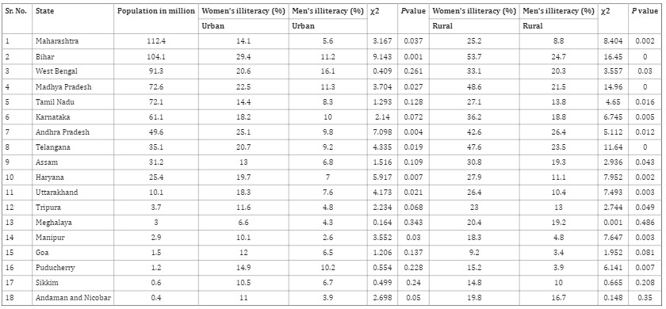
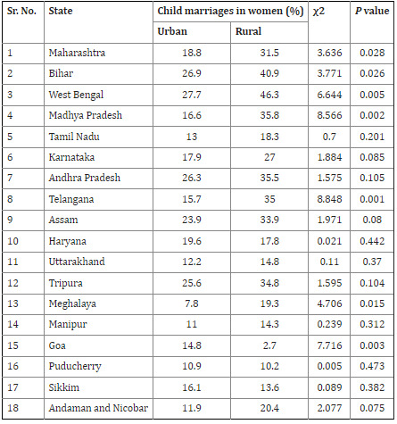
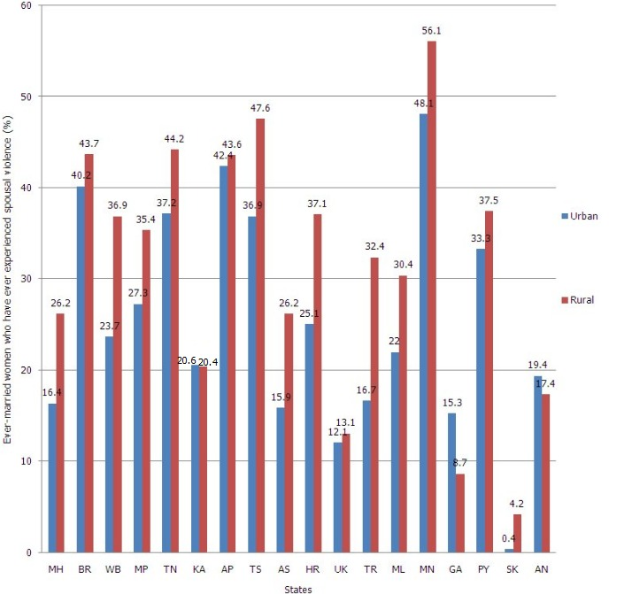
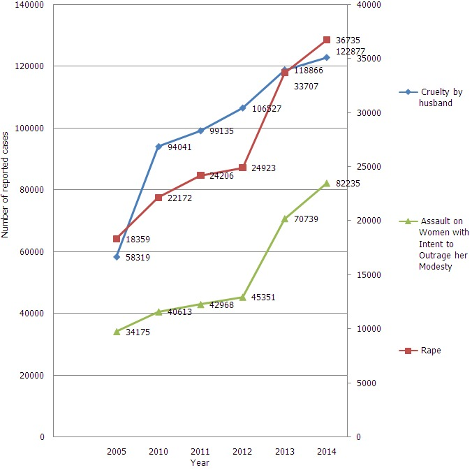
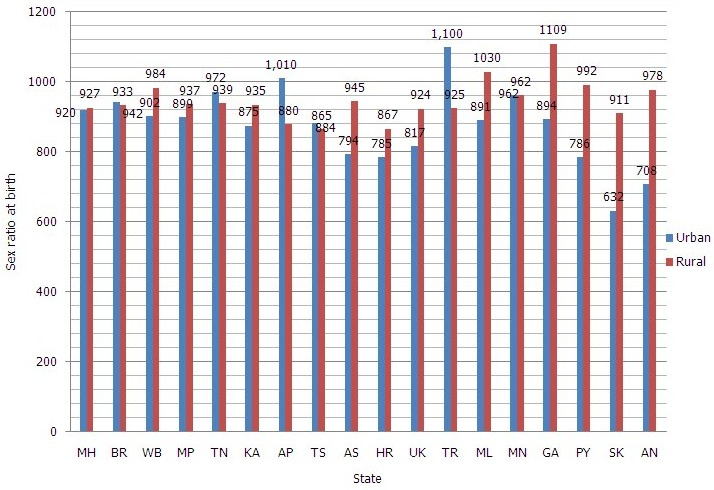

Silver Oak University
Women empowerment and gender equality has become the pivot of all global agendas. The struggle for ending gender inequality and achieving emancipation of women is long drawn. Moreover, women empowerment is considered as a pre-requisite for the attainment of sustainable development (UNFPA, 2021). Gender equality and empowering women are not only an end in themselves but also a means to achieve a prosperous, peaceful, sustainable and inclusive world. United Nations have organized four conferences on women’s issues. The 4th conference popularly known as The Beijing Platform for action is a landmark event as it focuses on twelve critical areas of women’s concern and imagines a world where each woman and girl can exercise her freedom of choices (UN Women, 2014). The sustainable development goal mentions achieving gender equality and empowering all women and girls as a specific objective to be achieved by 2030. (Women and Health, 2021). Several conventions such as Elimination of All Forms of Discrimination against women, Convention on Political Rights of women, Declaration on the Elimination of violence against women have been adopted to end gender discrimination (International conventions on women, 2020).
Though numerous efforts have been initiated for providing a discrimination free world to women but the statistics throughout the world still paints a gloomy picture. According to UNDESA, one in three women (736 million) have been subjected to physical and or sexual violence at least once in their lifetime, since the age of 15. Also, according to a statistic, only 28% of women held managerial positions throughout the world. Moreover, it was also pointed out that the burden of unpaid domestic care and work is lopsided which further increased during the pandemic (UNDESA, 2020).) According to Global Gender Gap Report, the COVID 19 pandemic has increased the time period for gender parity to be achieved from 99.5 years to 135.6 years (World Economic Forum, 2021).
Indian constitution treats its women at par with men through various constitutional (Article 14, 15, 42) and legal provisions (Planning Department, 2021). Moreover, it provides for affirmative action in favour of women to end the age-old discrimination and provide equal opportunities. 73rd and 74th constitutional Amendments provide reservation to women in local bodies so as to make them politically empowered and have a say in decision- making (Hazarika, 2011). Numerous women targeted schemes have been launched since Indian Independence such as Pradhan Mantri Janani Suraksha Yojana, Beti Bachao Beti Padhao, Ujjawala. SwadharGreh, Pradhan Mantri Matru Vandana Yojana etc. (MOW & CD, 2021). However, even after more than seven decades of independence and numerous initiatives, the Indian women face lot of discrimination and injustice. The longstanding and intergenerational cycles of gender biasness impacts both the present as well as the future of the country. (Pradhan, 2020). According to recent report released by World Economic Forum, India has slipped 28 places and ranked 140th among 150 nations in global gender gap. The gap in India has widened to 62.5% due to various factors such as decrease in women’s labour force participation, inadequate representation of women in politics and leadership roles, lagging female to male literacy rates (Shettigar & Mishra, 2021). The major hindrance in achieving gender equality lies in the implementation of laws and schemes coupled by the gendered vision of patriarchy (Saxena, 2019).
The present paper attempts to examine the educational, health, economic, political and socio-cultural status of women in different states of India. The papers also aim to analyse the overall level of women empowerment achieved by the states. Moreover, the papers also attempt to scrutinize the reasons responsible for the emerging trends in different states.
Distribution of states of India according to the gender gap in illiteracy among urban area as compared to rural area
Child marriages of girls in rural and urban areas of some states and UTs of India
National Family Health Survey (2019–21) that is NFHS-5: Ministry of Health and Family welfare conducts this survey with the help of International Institute for Population Sciences. Technical assistance for the survey is mainly provided by this institute.
Women & Men in India, 2019: This is the 21st issue of the report which is published by the Social Statistics Division, National Statistical Office, Ministry of Statistics and Programme Implementation. Crime in India, 2020: This is the 68th edition of annual report on crimes in India. It is published by National Crime Bureau, Ministry of Home Affairs, Government of India.
Ever-married women that have ever experienced spousal violence (%) and adolescent pregnancy: The overall percentage of spousal violence among ever-married women was 25.2% in urban area and 31.2% in rural area. Spousal violence was higher in the rural area of Manipur (56.1%) followed by Telangana (47.6%), Tamil Nadu (44.2%) and Bihar (43.7%). Similar observations were noted in an urban area as shown in Figure 1. Figure 2 shows a number of cases reported under the head of cruelty by husband and rape. There was an upward trend in a number of cases reported to the head of cruelty by husband and rape from the year 2010 to 2014. Percentage of adolescent pregnancy was higher in Tripura and West Bengal in the rural area (20.7% and 20.6%) as compared to an urban area (13.7% and 12.4%) respectively.
Distribution of states and UTs of India according to percentage of ever-married women who have experienced spousal violence
Distribution of number of cases reported as per National Crime Record Bureau (NCRB), India, under head of cruelty by husband and rape from the year 2005 to 2014
Distribution of states and UTs of India according to sex-ratio at birth in urban and rural areas
In present study female literacy has been significantly lower as compared to male literacy in rural areas of 15 states and 3 UTs except for Meghalaya and Sikkim state and Goa and Andaman and Nicobar UTs. The reason for this may be several parents did not have permitted their female children to go to schools and another reason could be child marriage of girls [15]. Another reason might be that most people are below the poverty line and weren't conscious that children should get the free education according to the law [15]. Hence there is a gender gap between educations. The 11th five-year plan had decided to reduce the gender gap in literacy to 10% points by 2012 [16]. However in present study gender gap was observed in rural areas of all states except Meghalaya and Sikkim. Also according to censuses held in 2001 and 2011, the percentage of female literacy in the country was 54.16% and 65.46% respectively. An increase in 11.3% during the period 2001-2011, however, this was 3.6% lower than that during the period of 1991-2001. This declining trend over a decade is a matter of concern for sustainable development as it affects women empowerment [17]. In a country like India, literacy is the core basis of social and economic growth. Though the government has made an act that each child under the age of 14 should get free education, the setback of illiteracy is still at large [15]. Similarly, Lailulo YA et al had observed gender gap between education in the Ethiopia and also noted that educated women with educational attainment of primary education and above are less likely got married at an early age than those who are uneducated [18]. Raj Anita et al had studied the prevalence of child marriage using National Family Health Survey-3 data and had found that the maximum frequency of child marriage among women having less than a secondary education and residing in the rural area [19]. Similar findings were noted in NFHS-4 data phase 1, among top 4 most populated states. West Bengal and Bihar had a higher percentage of child marriage, 46.3 and 40.9% respectively in rural areas. David R et al had also similar observations related to higher prevalence of child marriage to girls with less education and residing in rural areas [20]. Adolescent pregnancy or 'motherhood in childhood' is one of the gravest health hazards to young women in India. Patra S et al had observed that stillbirth and abortion were more widespread among younger adolescents and the proportion of live births (vs. stillbirth or abortion) was also advanced among women having 10 years or more education [21]. As per UNFPA, the girl with adolescent pregnancy bears end of her education along with shrinking away from her job prospects and her vulnerability to poverty and exclusion increases [22]. Impediments from pregnancy and childbirth were the leading cause of death among adolescent girls [22]. In the present study, it was observed that coverage of full antenatal care (ANC) in states was the lowest in rural Bihar 03% compared to rural Tamil Nadu, 43.8%.Ahmed S et al had observed that women with complete primary education are almost three times more likely to have made at least four ANC visits [23]. Bihar had 53.7% of women illiteracy in the rural area as compared to Tamil Nadu, 27.1%. Kawaguchi L et al. had noted that women that married young were less likely to utilize ANC [24]. Bihar had 40.9% of child marriages to the rural area as compared to Tamil Nadu, 18.3%. Birmeta K et al had observed that women with education were more than twice likely to attend ANC as compared with those who had no education [25]. Ensuring universal accesses to sexual and reproductive health and reproductive rights as agreed in accordance with the Programme of Action of the International Conference on Population and Development and the Beijing Platform for Action and the outcome documents of their review conferences. 'Gender equality means that the different behaviors, aspirations, and needs of women and men are considered, valued and favored equally' [26]. Gender equality is a matter of human rights. It is also a driver of development progress. Gender equality, rooted in human rights, is increasingly recognized both as an essential development goal on its own and as vital to accelerating sustainable development overall [27]. Sex ratio is defined as the number of females per 1000 males in the population and is an important social indicator to measure the extent of prevailing equity between males and females [28]. Though the overall sex ratio of the Country is showing a trend of improvement, the child sex ratio is showing a declining trend, which is a matter of concern. Child sex ratio (0-6 years) at country level was 945 in 1991, 927 in 2001 and has now declined to 914 in Census 2011 [27]. The sex ratio of birth is an indicator of the discrimination against the girl child and dreadful crimes such as female feticide. As per NFHS-4 child sex ratio was the lowest in urban Sikkim, 632 followed by Andaman and Nicobar and Haryana with child sex-ratio of 708 and 785 respectively. Gender inequality manifests itself in various forms, the most obvious being the tendency towards the continuously declining female ratio of the population of the last few decades [29]. Further research is needed to study the factors associated with declining female ratio of the population.
There is the gender gap between illiteracy with women more affected in rural areas with higher prevalence of child marriages and poor utilization of maternal health services. Also, the violence against women is showing an upward trend with declining sex-ratio at birth.